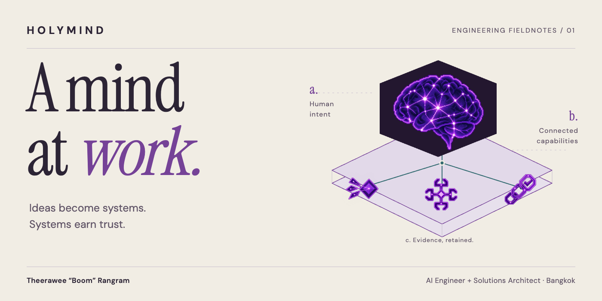
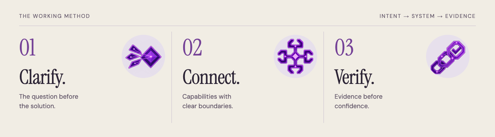

Theerawee Rangram (Boom)
AI Engineer & AI Solutions Architect · Bangkok, Thailand
Creator of HolyMind Framework.
I turn ambitious business strategies into practical AI systems, agentic workflows and automation—with explicit permissions, human review and evidence people can inspect. My background spans 9+ years of software delivery across banking, insurance, fintech and e-commerce.
Recruiter profile · โปรไฟล์ภาษาไทย · Connect on LinkedIn ↗
ธีรวีร์ รางแรม — เชื่อมโจทย์ธุรกิจ สถาปัตยกรรมซอฟต์แวร์ และการลงมือพัฒนา AI ให้เป็นระบบที่คนใช้งานและตรวจสอบได้
Where I can contribute
AI Solutions Architecture. Requirements, system boundaries, integrations and a practical delivery plan.
Applied GenAI & Agentic AI. Model-and-tool workflows, LLM evaluation, guardrails and human-in-the-loop decisions.
Enterprise implementation. TypeScript, React, Angular, FastAPI and PostgreSQL access controls, informed by software delivery experience at ttb spark, Accenture and Allianz Technology.
Relevant conversations include AI Solutions Architect, AI Engineer, GenAI Engineer, Forward Deployed Engineer and AI Transformation Consultant roles. These describe role fit, not a list of past job titles.
How I work

Clarify the goal. Connect the capabilities. Verify the result.
The HolyMind showcase turns that approach into an inspectable public example: three illustrative business workflows, explicit input boundaries, source-to-output inspection and a planning brief that preserves the visitor’s choices. It is a portfolio demonstration—not a live AI service or a claimed client outcome.
Explore the live work · Inspect the source · Read my experience
Technical notes and credits
This repository serves the static portfolio on GitHub Pages. Engineering notes cover local setup and architecture. Original HolyMind artwork and third-party assets retain their individual notices; see the audio credits.
Hiring for a business problem that needs working AI? Let’s discuss the role on LinkedIn →